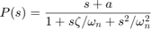
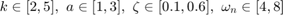
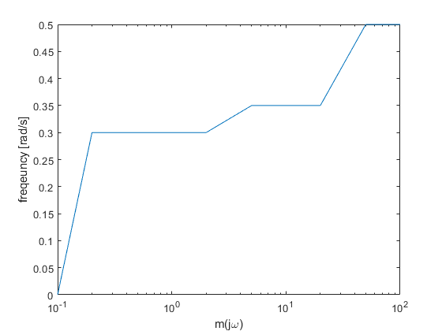
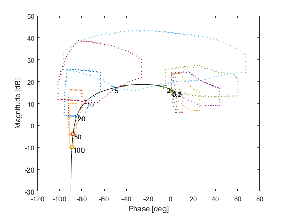
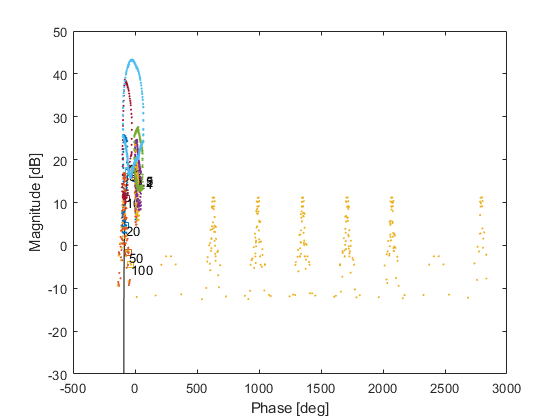

Example:Plant with uncertain uncertainty
The plant is given as

with uncertain paraetmers given as

and with uncertain uncertainty given as
w = [0.1 0.2 0.5 1 2 5 10 20 50 100]; m = [0 0.3 0.3 0.3 0.3 0.35 0.35 0.35 0.5 0.5]; semilogx(w,m); xlabel('m(j\omega)'); ylabel('freqeuncy [rad/s]')
Define uncertain parameters:
k=qpar('k',2,2,5,8); a=qpar('a',3,1,3,8); z=qpar('z',0.6,0.1,0.6,8); wn=qpar('wn',4,4,8,8);
Construct the numerator and denomerator and plant
num = [k*wn*wn k*wn*wn*a]; den = [1 2*z*wn wn*wn]; P = qplant(num,den)
P =
qplant with properties:
num: [1×1 qpoly]
den: [1×1 qpoly]
delay: []
pars: [4×1 qpar]
unstruct: []
uncint: []
templates: []
nominal: []
info: 'generated from [num,den] data on: 10-Feb-2019 21:42:54'
compute the nominal and template by e.g. recurcive grid ans show the results
P.ctpl('recgrid',w);
P.cnom(logspace(-2,3,200));
P.showtpl
Calculating templates by recurcive grid Accuracy: 5 [deg], 3 [dB] --> for w=0.1 [rad/s] ADGRID: 4 uncertain and 0 constant parameter(s). Accuracy [5 deg 3dB] # function evaluations = 257265 Final Border Size = 39 --> for w=0.2 [rad/s] ADGRID: 4 uncertain and 0 constant parameter(s). Accuracy [5 deg 3dB] # function evaluations = 258050 Final Border Size = 38 --> for w=0.5 [rad/s] ADGRID: 4 uncertain and 0 constant parameter(s). Accuracy [5 deg 3dB] # function evaluations = 258963 Final Border Size = 43 --> for w=1 [rad/s] ADGRID: 4 uncertain and 0 constant parameter(s). Accuracy [5 deg 3dB] # function evaluations = 261510 Final Border Size = 63 --> for w=2 [rad/s] ADGRID: 4 uncertain and 0 constant parameter(s). Accuracy [5 deg 3dB] # function evaluations = 272427 Final Border Size = 73 --> for w=5 [rad/s] ADGRID: 4 uncertain and 0 constant parameter(s). Accuracy [5 deg 3dB] # function evaluations = 360556 Final Border Size = 154 --> for w=10 [rad/s] ADGRID: 4 uncertain and 0 constant parameter(s). Accuracy [5 deg 3dB] # function evaluations = 380989 Final Border Size = 95 --> for w=20 [rad/s] ADGRID: 4 uncertain and 0 constant parameter(s). Accuracy [5 deg 3dB] # function evaluations = 383086 Final Border Size = 65 --> for w=50 [rad/s] ADGRID: 4 uncertain and 0 constant parameter(s). Accuracy [5 deg 3dB] # function evaluations = 384295 Final Border Size = 51 --> for w=100 [rad/s] ADGRID: 4 uncertain and 0 constant parameter(s). Accuracy [5 deg 3dB] # function evaluations = 384936 Final Border Size = 52
Add the unstructored uncertainty unsing the command aunstruc - a shortcut for add unstructored uncertainty
P.aunstruc(w,m)
ans =
qplant with properties:
num: [1×1 qpoly]
den: [1×1 qpoly]
delay: []
pars: [4×1 qpar]
unstruct: [10×2 double]
uncint: []
templates: [10×1 qtpl]
nominal: [1×1 qfr]
info: 'generated from [num,den] data on: 10-Feb-2019 21:42:54'
Now compute the templates again
P.ctpl('recgrid',w);
P.showtpl
Calculating templates by recurcive grid Accuracy: 5 [deg], 3 [dB] --> for w=0.1 [rad/s] ADGRID: 4 uncertain and 0 constant parameter(s). Accuracy [5 deg 3dB] # function evaluations = 385577 Final Border Size = 39 --> for w=0.2 [rad/s] ADGRID: 4 uncertain and 0 constant parameter(s). Accuracy [5 deg 3dB] # function evaluations = 386362 Final Border Size = 38 --> for w=0.5 [rad/s] ADGRID: 4 uncertain and 0 constant parameter(s). Accuracy [5 deg 3dB] # function evaluations = 387275 Final Border Size = 43 --> for w=1 [rad/s] ADGRID: 4 uncertain and 0 constant parameter(s). Accuracy [5 deg 3dB] # function evaluations = 389822 Final Border Size = 63 --> for w=2 [rad/s] ADGRID: 4 uncertain and 0 constant parameter(s). Accuracy [5 deg 3dB] # function evaluations = 400739 Final Border Size = 73 --> for w=5 [rad/s] ADGRID: 4 uncertain and 0 constant parameter(s). Accuracy [5 deg 3dB] # function evaluations = 488868 Final Border Size = 154 --> for w=10 [rad/s] ADGRID: 4 uncertain and 0 constant parameter(s). Accuracy [5 deg 3dB] # function evaluations = 509301 Final Border Size = 95 --> for w=20 [rad/s] ADGRID: 4 uncertain and 0 constant parameter(s). Accuracy [5 deg 3dB] # function evaluations = 511398 Final Border Size = 65 --> for w=50 [rad/s] ADGRID: 4 uncertain and 0 constant parameter(s). Accuracy [5 deg 3dB] # function evaluations = 512607 Final Border Size = 51 --> for w=100 [rad/s] ADGRID: 4 uncertain and 0 constant parameter(s). Accuracy [5 deg 3dB] # function evaluations = 513248 Final Border Size = 52